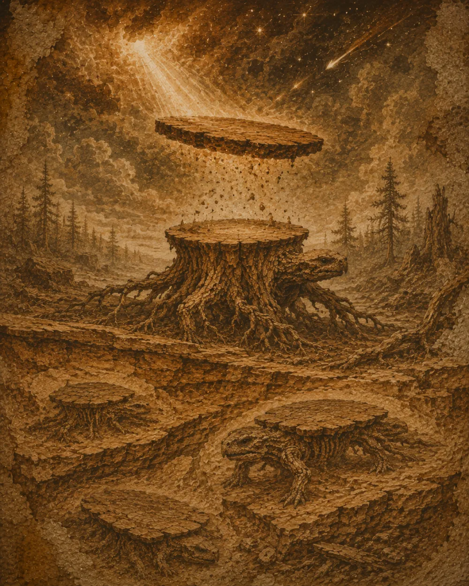

History
Some three hundred thousand cycles ago, on the plains of iron dust, the first Mensa primigenia appeared.

The Age of Green Wood
Patient quadrupeds, the proto-tables grazed the nascent forests — and from wood they still draw their frame today. Long mistaken for mere flat rocks, they were noticed only the day one of them, disturbed, drifted slowly away at dusk.
The migrations
The cooling of the plains pushed the herds toward the lowlands. The species with leaves — able to extend their tops — survived; the others died out with the first frosts.
The Pact of the Meal
Nine thousand cycles ago, a handful of tables drew near the fires for warmth. In exchange for shelter they accepted the weight of bowls: thus were born the first domestic lineages. Fewer than four thousand individuals still roam free today.
“Beneath the varnish, something, perhaps, still awaits the plain.”